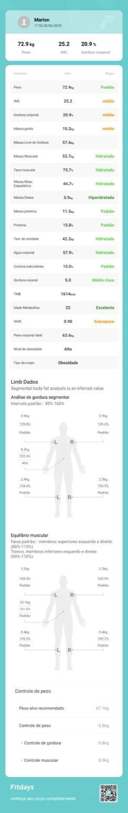
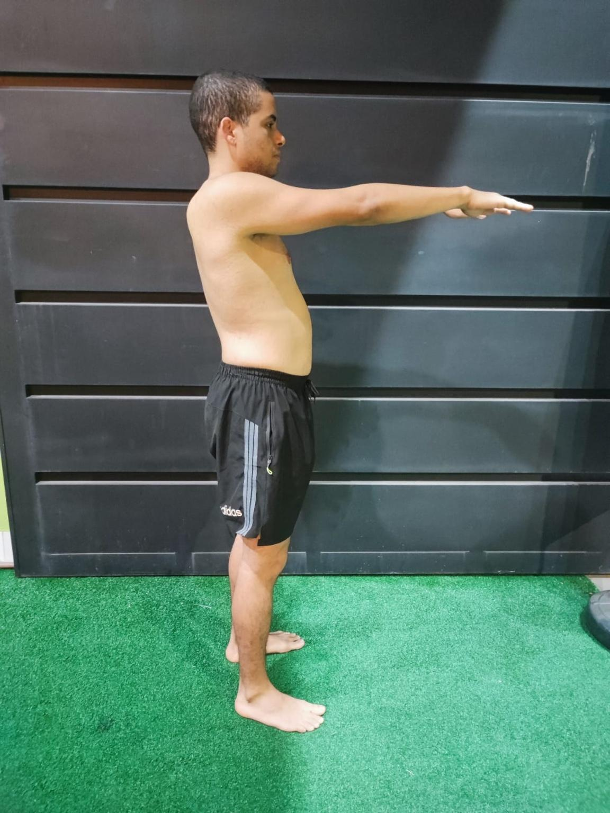
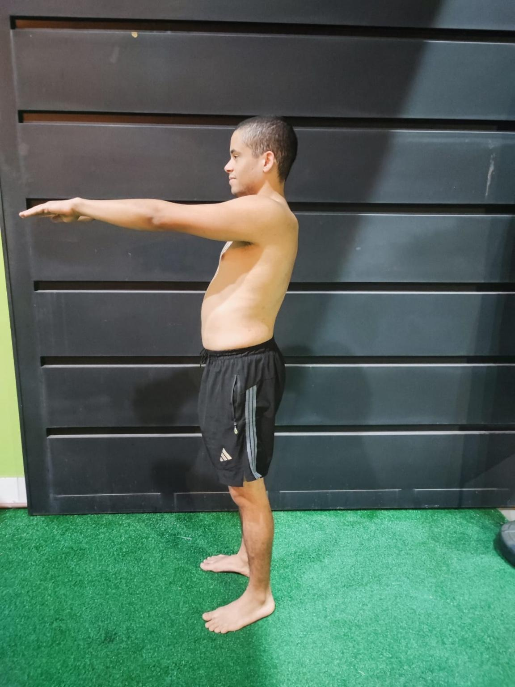

Fotos Iniciais




Projeto de Redução de Gordura Corporal e Condicionamento Físico
Peso: 72,9 kg
IMC: 25,2
Gordura Corporal: 20,9%
Idade Metabólica: 22 anos
Objetivo: Redução de gordura corporal, manutenção de massa magra, melhora da postura e desempenho para prova da polícia penal.
✅ Café da Manhã:
- 2 ovos + 1 clara
- 1 fatia de pão integral ou 3 colheres de sopa de aveia
- 1 fruta (banana, maçã ou mamão)
- 1 colher de sopa de pasta de amendoim
- Café preto sem açúcar
✅ Lanche da Manhã:
- 1 iogurte natural desnatado ou vegetal
- 1 fruta pequena (pera, mexerica ou maçã)
✅ Almoço:
- 150g de frango grelhado ou carne magra
- 3 colheres de sopa de arroz integral ou 1 batata doce média
- 1 concha de feijão
- Salada crua à vontade com 1 colher de azeite de oliva
- Legumes refogados
✅ Lanche da Tarde:
- Shake com 1 banana + 1 dose de whey + 200ml de água ou leite vegetal
OU
- 1 pão integral com 1 colher de pasta de amendoim
✅ Jantar:
- 120g de peixe, frango ou ovos
- 2 colheres de sopa de purê de batata ou arroz
- Legumes ou salada leve
✅ Ceia (opcional):
- 1 copo de leite com cacau 100%
OU
- 1 ovo cozido
OU
- Mix de castanhas (10g)
Substituições sugeridas: